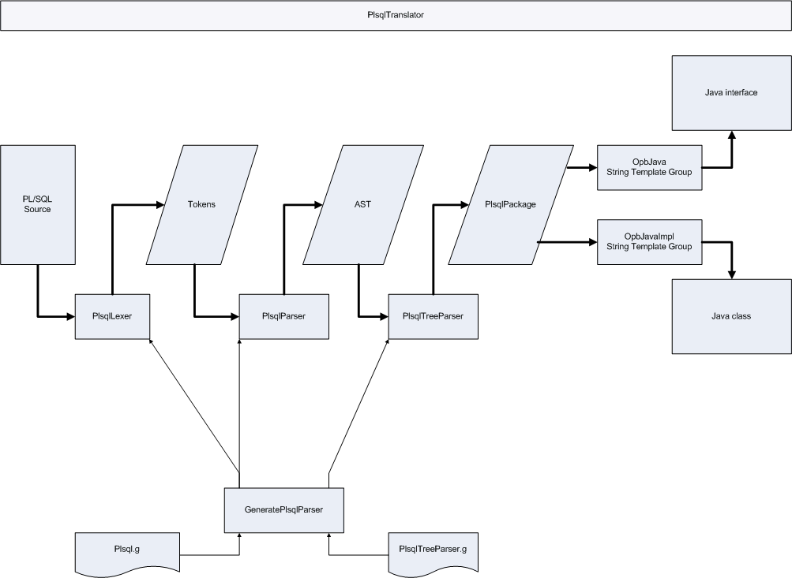

Provides classes to convert PL/SQL package specifications into Java classes
that can be used with Opb code.
To convert PL/SQL package specifications into Java classes use
{@link com.butterfill.opb.plsql.translation.PlsqlTranslator}.
The translator translates the following PL/SQL language constructs;
- The package name,
- Constants,
- Functions,
- Procedures and
- Multi-line comments.
If the only translatable constructs found are constants, the translator
creates a single Java interface per PL/SQL package specification.
Otherwise, the translator creates a one Java interface and one Java class
(that implements the interface) per PL/SQL package specification.
The PL/SQL package name will be used to create the Java interface and Java
class names.
See also:
Converting SQL names to Java names.
Each PL/SQL constant will be translated into a constant of the Java
interface (a public static final field).
Each PL/SQL function will be translated into a non-static Java method that
calls the PL/SQL function.
Each PL/SQL procedure will be translated into a non-static Java method that
calls the PL/SQL procedure.
Multi-line comments may be used to provide information to the translator.
The first sentence of a normal multi-line comment will be added to the
javadoc of the generated construct.
The two kinds of special multi-line comment are described below.
Please note that the translator assumes the PL/SQL package code is valid.
Special multi-line comments
Both kinds of special multi-line comment are used to contain elements.
These elements;
-
Start with the element type.
The element type must be on it's own line.
-
Have one or more properties on the lines following the element type.
Each property must be on it's own line.
Properties are key/value pairs separated by the equals sign.
- Are terminated by a semi-colon.
Comments in special multi-line comments
Comments can be embedded in special multi-line comments.
Embedded comments start with -- and end with ;.
Embedded comments can span any number of lines.
The following special multi-line comment includes an embedded comment.
/*opb-package
-- this is a comment
in a special multi-line comment;
field
name=demo_field;
*/
Properties defined in special comment elements
Some properties are described to have only Y or N as valid values.
For all of these properties Y is used to indicate Yes and N is used to
indicate No.
For all of these properties;
- Y and y will be interpreted as Yes,
- N and n will be interpreted as No and
- any other value will be considered to be a mistake.
The opb-package comment
The opb-package comment is used to add translation information to the
PL/SQL package.
An opb-package comment is a multiline PL/SQL comment starting with
/*opb-package and ending with */.
A PL/SQL package specification can contain any number of opb-package
comments.
The only element that can be included in an opb-package comment is the
field element.
An opb-package comment can contain any number of field elements.
The opb-package comment is optional.
The following opb-package comment defines a single field called demo_field;
/*opb-package
field
name=demo_field;
*/
The field element
The field element is used to define a package field.
The field element must be within an opb-package comment.
A package field translates to a Java object property (i.e. a non-static
variable with getter and setter methods).
Fields that hold data of a type that cannot be represented by a single
column in a SQL result set are not loadable.
E.g. A field with datatype VARCHAR[] would be translated to a java
property of type String[]. Result sets cannot have columns that contain
String arrays.
If the field is not read-only and is loadable, a read-only non-static
variable is created to hold the value of the field that was last loaded
from the database.
This variable will have DataSourceValue appended to the field name and
is accessible via the get[field name]DataSourceValue method.
There will be a method called get[field name]Changed that will return
true if the field value is now different to the value loaded from the
database.
If a package has at least one loadable field, the generated class will
be an entity.
An entity is an object that can be represented by a single row
in a SQL result set. Entities have a load method that takes values from
a SQL result set and saves them in the Java object properties described
above.
An overview of the field element syntax follows;
field
name=[name of the field]
datatype=[NUMBER, VARCHAR2, DATE, package name etc.] (DEFAULT VARCHAR2)
initial_value=[literal value] (DEFAULT null)
id=[Y or N] (DEFAULT N)
on_change=[list of local module call names]
in_load=[ignored, optional or required] (DEFAULT required)
read_only=[Y or N]; (DEFAULT N)
All properties of the field element are optional except for name.
name
The name of the field. Do not use;
-
either data_source_value or value_wrapper as a field name post-fix.
- field names that start with opb
- logger as a field name
- parameter names as field names
See also:
Converting SQL names to Java names.
datatype
The datatype of the field.
See also:
Converting SQL datatypes to Java datatypes.
initial_value
The initial value of this field.
By default, fields have an initial value of null. The initial value of a
field and it's data source value is set when the instance is instantiated
and when opbClearState() is called - this happens before the instance is
loaded via opbLoad(ResultSet).
The conversion of this property to a Java literal depends on the datatype of
the field.
If the field will be String;
The value is enclosed in double quotes.
Back slashes are inserted before all double quotes.
If the specified value starts and ends with a single quote, they will be
removed.
If the field will be Long;
L will be appended.
If the field will be Float;
F will be appended
If the field will be BigDecimal;
The value is passed to BigDecimal's valueOf method.
If the field will be Boolean;
The value is converted to lower case. I.e. Expected values are TRUE or FALSE
ignoring case.
Otherwise;
The value is passed through unchanged.
id
Set to Y to make this an ID field.
An ID field (possibly in combination with any number of other fields)
can be used to distinguish an instance of the generated class
from another instance of the generated class.
If the package has at least one ID field, the generated class will be
identifiable.
If no fields have an id attribute set to Y, the generated class will not
be identifiable.
Setting id to Y changes the default read_only value to Y
(read_only can still be explicitly set for an ID field).
on_change
The name of a local module to be called when the value of this field is
changed.
Local modules are functions or procedures that belong to the package
being translated.
There can be any number of on_change properties for a field.
The local module specified must be translated into a Java method that takes
no arguments.
The return value of a function will be ignored.
in_load
By default, fields must be present in the SQL result set when the entity is
loaded.
By setting in_load to optional, the load method will not fail if
the field is not present in the SQL result set.
By setting in_load to ignored, the field will be treated as not loadable.
I.e. There will be no data source value for the field and the load method
will not load the field.
read_only
Set to Y to make the field read-only. By default, fields are not read-only.
See also: The id attribute.
The opb comment
The opb comment is used to add translation information to a function or
procedure.
The opb comment is a multiline PL/SQL comment starting with
/*opb and ending with */.
An opb comment can contain clear_cached, invalidate_cached and/or param
elements.
An opb comment can contain any number of these elements.
The opb comment is optional.
The following opb comment tells the transaltor that;
-
The result set returned will contain data that can be used to load
permission objects.
-
The permission field can be used as an actual parameter
(run-time argument) for the formal parameter p_permission.
-
The permission_search_string field can be used as an actual parameter
(run-time argument) for the formal parameter p_search_string.
/*opb
param
name=RETURN
datatype=cursor?permission;
param
name=p_permission
field=permission;
param
name=p_search_string
field=permission_search_string;
*/
FUNCTION get_permissions(
p_permission IN VARCHAR2,
p_search_string IN VARCHAR2
)
RETURN SYS_REFCURSOR;
The following opb comment tells the transaltor that following successfull
completion of a delete_permission call, all objects of type permission
should be removed from cache.
/*opb
clear_cached
name=permission;
*/
PROCEDURE delete_permission(
p_permission IN VARCHAR2
);
The clear_cached element
The clear_cached element tells the transaltor that following successfull
completion of a call, the specified objects and all results for the
specified objects should be removed from cache.
Clearing an object removes the object from it's
data object source
so that it will never be accessed again.
An overview of the clear_cached element syntax follows;
clear_cached
name=[ALL, this or a package name];
name
Specifies which objects should be removed from cache. This can be;
- ALL - all objects and results are cleared
-
this - this instance and all results for objects of this type are
cleared
-
package name - all objects and all results for objects of the
specified type are cleared.
The invalidate_cached element
The invalidate_cached element tells the transaltor that following successfull
completion of a call, the specified objects should be flagged as invalid and
all results for the specified objects should be removed from cache.
Flagging an object as invalid tells the
data object source
that the object must be re-loaded before it can be accessed again.
An overview of the invalidate_cached element syntax follows;
invalidate_cached
name=[ALL, this or package name];
name
Specifies which objects should be invalidated. This can be;
-
ALL - all objects are flagged as invalid and all results are cleared
-
this - this instance is flagged as invalid and all results for
objects of this type are cleared
-
package name - all objects of the specified type are flagged as
invalid and all results for objects of the specified type are cleared.
The param element
The param element is used to add translation information to a PL/SQL call
parameter or return value.
An overview of the param element syntax follows;
param
name=[parameter name or RETURN]
datatype=[NUMBER, VARCHAR2, DATE, package name etc.]
field=[package field name]
use_result_cache=[Y | N] (DEFAULT Y)
use_scalar_result_cache=[Y | N] (DEFAULT N)
use_data_object_cache=[Y | N];
name
The name of the parameter that this element applies to. Set the name to
RETURN to add translation information to a return value.
datatype
Overrides the datatype defined in the PL/SQL call specification.
See also:
Converting SQL datatypes to Java datatypes.
field
The name of a package field. This could also specify the data source value
of a package field (by appending _data_source_value to a field name).
This maps the field name to the parameter name so that the call is
translated into two methods;
One method has the same signature as the PL/SQL call.
The other method removes mapped parameters from the signature and uses the
mapped fields as parameter arguments.
use_result_cache
Set to N to tell the
data object source
not to cache this result.
By default, the result cache will not be used except for function return
values, of cursor datatype, in calls that do not use OUT parameters.
The result cache can only be used for:
- function return values,
- of cursor datatype,
- in calls that do not use OUT parameters.
use_scalar_result_cache
Set to Y to tell the generated method to use the scalar result cache for
this parameter.
Unless set to Y, the scalar result cache will not be used.
The scalar result cache can be accessed via an OpbSession.
The scalar result cache can only be used for:
- function return values,
- of scalar datatype (i.e. not cursors),
- in calls that do not use OUT parameters.
use_data_object_cache
Set to Y to tell the
data object source
to cache data objects returned.
Set to N to tell the
data object source
not to cache data objects returned.
The data object cache can be used for out parameters (of both functions
and procedures) and function return values.
If this parameter is of cursor datatype and the datatype specifies which
object type the cursor will contain the default value is Y.
If the specified object type is not cacheable, set use_data_object_cache to
N or the Java code generated will not compile.
If this parameter is not of cursor datatype or the datatype does not specify
which type of object the cursor will contain, this will be N (even if
explicitly set to Y).
Converting SQL names to Java names
Java names are created by splitting the SQL name into bits separated by
underscores and putting the bits back together (without the underscores).
If a SQL name is double quoted, the quotes are removed before translation.
No further special treatment is given to double quoted SQL names.
When converting to a Java interface name, all characters of the Java name
are lower cased except the first character of each bit - which is upper
cased.
The Java class name will be the Java interface name with 'Impl' appended.
When converting to a Java field name, all characters of the Java name are
lower cased except the first character of each bit other than the first bit
- which is upper cased.
When converting to a Java constant name, underscores are not removed and all
characters are upper cased.
Java Java Java
field interface class
SQL name name name name Comment
----------- ---------- --------- ------------- -----------------------------------------------
name_2 name2 Name2 Name2Impl remove underscore
name2 name2 Name2 Name2Impl
name_two nameTwo NameTwo NameTwoImpl upper case first character of 2nd bit
nameTwo nametwo NameTwo NameTwoImpl lower case the lot (no underscores in SQL name)
NAME_2 name2 Name2 Name2Impl SQL names are converted to lower case
NAME_TWO nameTwo NameTwo NameTwoImpl
name__2 name2 Name2 Name2Impl double underscore in SQL name
NAME___TWO nameTwo NameTwo NameTwoImpl tripple underscore in SQL name
a_b_c aBC ABC ABCImpl
name_two_b nameTwoB NameTwoB NameTwoBImpl upper case first character of 2nd and 3rd bit
Converting SQL datatypes to Java datatypes
Datatype conversions during translation are handled by
{@link com.butterfill.opb.plsql.translation.DatatypeMap}.
Please see also
Working with character data.
Most datatypes can be used in PL/SQL calls without restriction.
E.g. The SQL type NUMBER can be used for parameters of any mode
(IN, OUT and IN OUT) and as the return type of a function.
SQL types that are translated as cursors cannot be used for parameters of
IN or IN OUT mode.
SQL types that are PL/SQL index-by tables cannot be used for parameters of
OUT or IN OUT mode.
Calls will fail if passed null for a parameter translated from a PL/SQL
index-by table because PL/SQL index-by tables cannot be null.
SQL types that are user defined SQL collections can be used for parameters
of any mode.
Parameters of IN mode that are user defined SQL collections are translated
to Java parameters of type Object[].
Hopefully, this makes these parameters easier to work by not forcing Java
developers to convert data to a specific type when Oracle could perform
implicit datatype conversions.
The PL/SQL BOOLEAN type cannot be used for parameters or as the return type
of a function.
Parameters and return values can be translated to Boolean Java types by
using an Opb comment.
In this situation data is transfered as text and converted to Boolean
using com.butterfill.opb.util.OpbBooleanHelper (from the opb-library project).
The following function
/*opb
param
name=RETURN
datatype=BOOLEAN;
*/
FUNCTION get_true
RETURN VARCHAR2;
Is translated to
Boolean getTrue() throws OpbDataAccessException;
Working with character data
Unfortunatly, working with long Strings (more than 4000 charcaters) and
VARCHAR2 parameters can cause problems.
The following examples assume that all characters used are single byte
characters.
When working with any Oracle DB:
-
Returning more than 32512 characters via VARCHAR2 parameters will cause
the PL/SQL error "numeric or value error: character string buffer too
small".
When working with Oracle DB 8i:
-
Passing Strings of length greater than 4000 to VARCHAR2 parameters will
cause the PL/SQL error "wrong number or types of arguments in call"
(Passing single element String arrays via index-by tables is a possible
work around for this limitation),
-
Passing String arrays that have elements of length greater than 32512
via index-by tables of VARCHAR2 type will cause a "size of array element
is too large" PL/SQL error.
When working with Oracle DB 10g:
-
Passing Strings of length greater than 32512 to VARCHAR2 parameters will
cause a "numeric or value error" PL/SQL error,
-
Passing String arrays that have elements of length greater than 32512
via index-by tables of VARCHAR2 type will cause a "unimplemented or
unreasonable conversion requested" PL/SQL error.
The data object source
In this section,
DO (short for data object) is used to refer to an instance
of a class that has been generated by opb-plsql from a PL/SQL package
specification.
Result is used to refer to a collection of DO's that has been created from
a SQL result set.
The data object source (provided by the opb-library) should be used to
access DO's.
The data object source provides access to new instances of the DO's.
Any DO's retrieved via a DO that came from a data object source will have
come from the same data object source.
Some DO's may be cached by the data object source.
The data object source provides access to results.
The data object source provides access to cached DO's and cached results.
The data object source allows it's caches to be cleared programatically.
The need to work directly with the data object source will be minimal when
working with DO's as the DO's handle most data object source communication.
For further details on the data object source, please refer to opb-library.
Details of the translation process
Translation of PL/SQL package specifications to Java classes is handled by
{@link com.butterfill.opb.plsql.translation.PlsqlTranslator}.
Very briefly, PlsqlTranslator is given PL/SQL source files and creates Java
source files.
This section provides some detail of what the PlsqlTranslator does but an
understanding of this section is not required to use it.

PlsqlLexer reads PL/SQL source code and breaks it up into a set of tokens.
The tokens will be PL/SQL keywords, numbers, identifiers etc.
PlsqlParser parses the tokens and constructs an abstract syntax tree (AST).
The AST contains details of the PL/SQL constructs that will be translated
and empty nodes for the PL/SQL constructs that will be ignored.
PlsqlTreeParser parses the AST and constructs a fully configured
{@link com.butterfill.opb.plsql.translation.PlsqlPackage} containing all the
information needed to generate Java code.
OpbJava and OpbJavaImpl are string template groups.
i.e. They are templates for the Java code that will be produced.
Given a fully configured PlsqlPackage, OpbJava produces a Java interface
and OpbJavaImpl produces a Java class.
PlsqlTranslator co-ordinates this process and then writes the output from
OpbJava and OpbJavaImpl to file.
Plsql.g and PlsqlTreeParser.g are ANTLR grammar files.
GeneratePlsqlParser generates PlsqlLexer, PlsqlParser and PlsqlTreeParser by
asking org.antlr.Tool to process the grammar files.
PlsqlLexer, PlsqlParser and PlsqlTreeParser need to be re-generated when
Plsql.g or PlsqlTreeParser.g are changed - this is not part of the
translation process.
Other translation details
This section provides some additional details of what the PlsqlTranslator
does but an understanding of this section is not required to use it.
The generated calls use Oracle specific syntax
"BEGIN call(?); END;" rather than the standard
"{ call(?); }". This is avoids improper truncation of VARCHAR
OUT parameters with lengths greater than 4000.